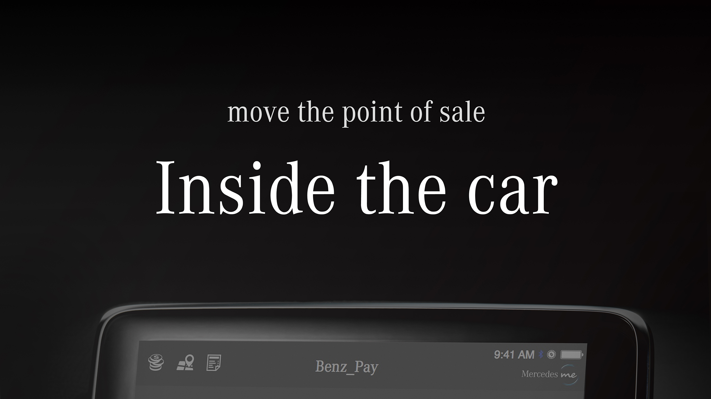
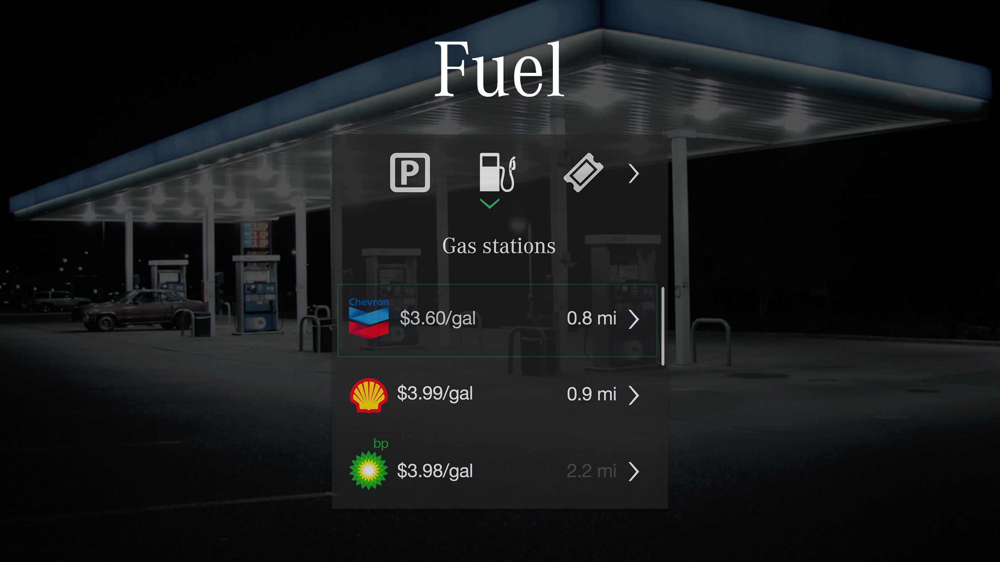
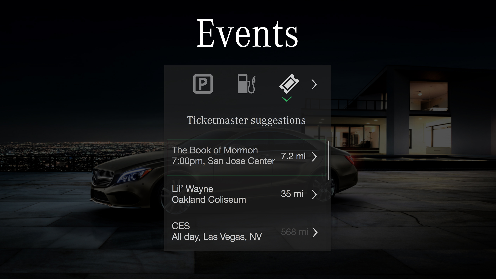
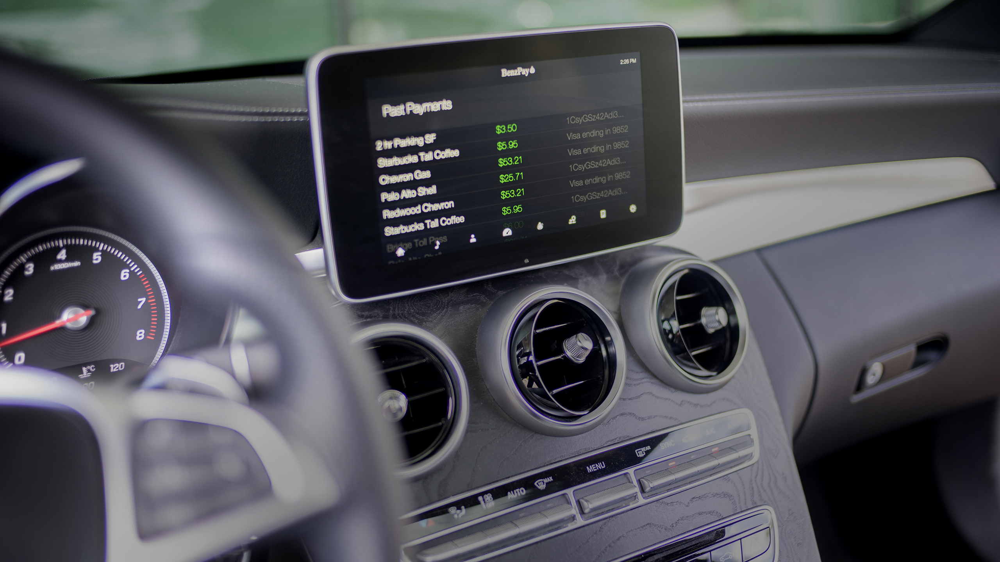
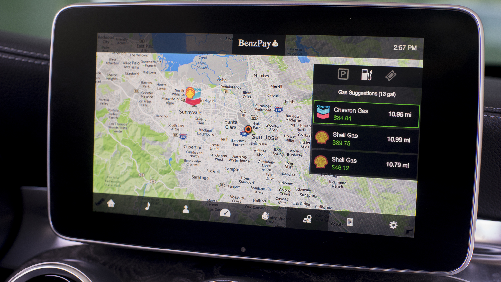

This is the winning hackathon project that caught the attention of Daimler's board members. We had the chance to meet Dr. Z as well as all the other executives during their yearly meeting. They were extremely impressed, and subsequently what lead me to a job at Mercedes.
    Designing applications for the car is a little different than designing for the phone or the web. Unless the driver is parked, most interactions occur without the user's complete attention.
For this reason, ensuring readability also means it's an interface easy to glance over. Additionaly, not all cars (including this c300) support touch input, so there must be a clear hierarchy when navigating through the menus.
Mobile payment services provide value by either saving money or saving time. Saving time is more important than saving money for the Mercedes owner, so each feature was designed to make the driver's life faster and more effortless. Some features include using gps and bitcoin to complete transactions without the need to stop, or by automatically calculating and paying for the price to fill up at a given gas station.